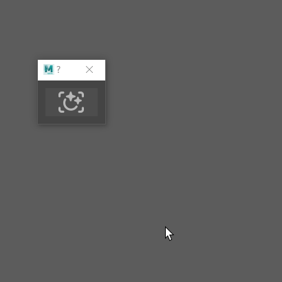

HButton¶
-
class
source.Qt.custom_widget.HButton(*args: Any, **kwargs: Any)¶ Create a Custom QPushButton with quick param setup and auto scale icon.
Todo
Accept text and icon at the same time and make take also scalable
- Parameters
text (str) – text to add to button
color (str) – color of the button Hex format
defaults "#4d4d4d"hover_color (str) – color of the button when hovered Hex format
defaults "#5285a6"pressed_color (str) – color of the button when pressed Hex format
defaults "#5285a6"checked_color (str) – color of the button when checked Hex format
defaults "#5285a6"icon (QtGui.QIcon) – Icon to put on the button(remove text)
optionalsize (list) – size of the button if fixed = True, format : [width,height]
optionalreduce_icon (int) – reduce the size of the icon whithin the button
defaults 0pos (list) – postition of the button within the layout format : [x,y]
optionalcheckable (Boolean, default is False) – set the button as checkable
defaults Falsefixed (Boolean, default is False) – make the button scalable
defaults Fixed
Example:
# Module specific imports import Qt.custom_widget as cstm_widget # PySide specific imports from PySide2 import QtCore from PySide2 import QtWidgets from PySide2 import QtGui win = QtWidgets.QDialog() layout = QtWidgets.QVBoxLayout(win) my_icon = QtGui.QIcon(":/image/my_icon.png") my_button = cstm_widget.HButton(icon=my_icon, color='#383838', size=[120, 30], fixed=True) layout.addWidget(my_button) win.show()
Functions
HButton.paintEvent(event)Paint the button and an upscale icon according to it’s current size
HButton.set_icon(icon)Set a new icon and update witch icon
paintEventis drawingset the style sheet of the button according to user input or default style sheet
{kind=link}